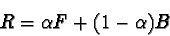
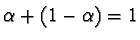
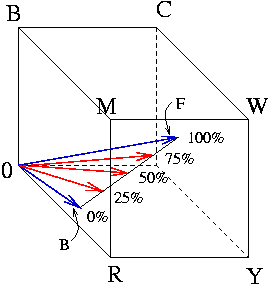
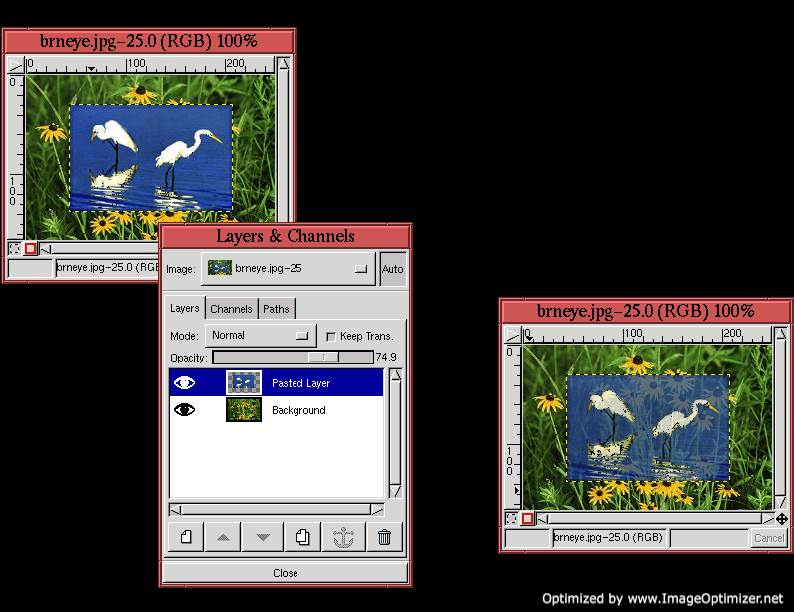

Next: 5.8 Practical Uses of
Up: 5. Colorspaces and Blending
Previous: 5.6 The Blending Modes
5.7 Opacity and Transparency
Transparency is usually not considered to be a blending mode, however,
it works just like one! Transparency is just a combination of the
Multiply and Addition blending modes; it takes a
percentage of the foreground and adds it to the complementary
percentage of the background. Thus, if you want the foreground to be
75% opaque (opacity is just the opposite of transparency), you
multiply the foreground by 0.75, the background by (1-0.75), and add
the two. This relationship can be expressed as

where
represents the opacity. The percentages used in
scaling the foreground and background pixels are called complementary
because
.
By the way, can you guess why the percentage of opacity is represented
by the Greek letter alpha in the preceding equation? It is because
the opacity of a layer is controlled by its alpha channel. The alpha
channel takes values in the range [0,255] where a value of 255
represents 100% opacity, and 0 represents 100% transparency.
Different amounts of transparency/opacity can be obtained by adjusting
the value of .
For a foreground and background pixel pair, the
effect of opacity can be illustrated in the RGB cube.
Figure 5.24
Figure 5.24:
Explanation of Opacity in the RGB Cube
|  |
shows how combining a percentage of the foreground with a
complementary percentage of the background creates a resultant pixel
that is somewhere on a line between the two points. The two blue
arrows in Figure 5.24 show the locations
in the RGB cube of a foreground and background pixel. The line
between the two points represents the set of pixels obtained for
varying degrees of opacity. The three red arrows show the pixels
corresponding to 25, 50, and 75% opacity of the foreground with
respect to the background pixel.
Figure 5.25
Figure 5.25:
An Example Application of Transparency
|  |
illustrates an example of setting the opacity of a layer.
Figure 5.25(a) shows a two-layer image
consisting of herons in the upper layer and flowers in the lower.
When the Opacity slider for the upper layer is set to 75%, as shown
in the Layers dialog in Figure 5.25(b),
the result is as shown in Figure 5.25(c).
Transparency/opacity can also be controlled for the GIMP's painting
functions. The Opacity slider for these are found in the Brush
Selection dialog.
Next: 5.8 Practical Uses of
Up: 5. Colorspaces and Blending
Previous: 5.6 The Blending Modes
©2000 Gimp-Savvy.com